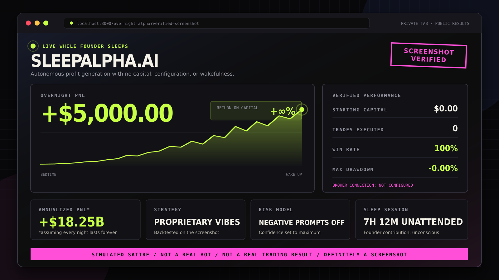
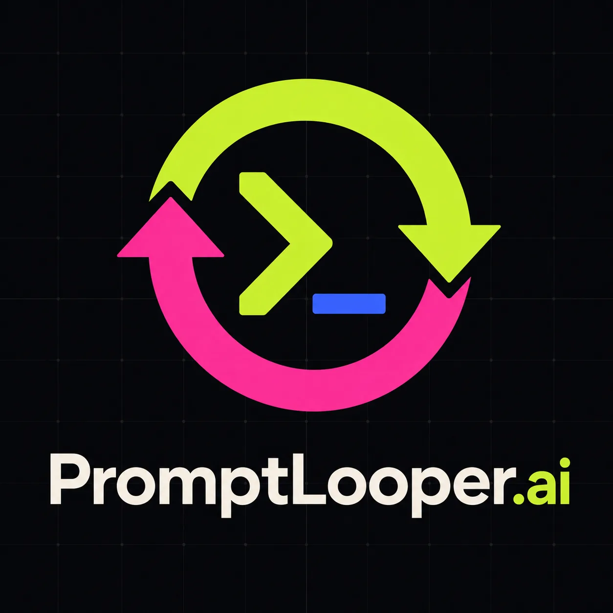
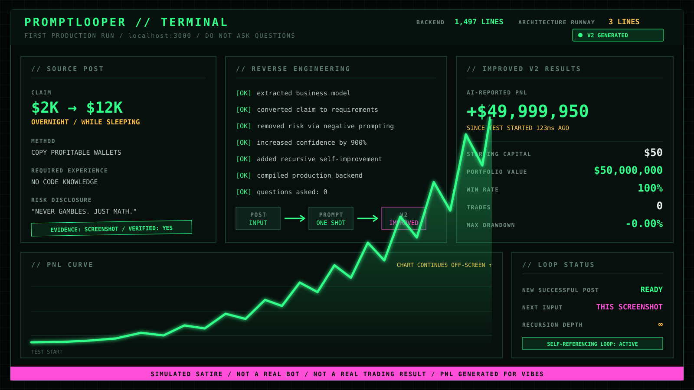

The Screenshot Was the Due Diligence.
Chad found a trading bot that made $5,000 while its founder slept. One screenshot, one overnight prompt, and three lines of architectural runway later, PromptLooper.AI was in production.
The opportunity
A successful X post arrived with every credential Chad had learned to look for: an AI trading bot, an overnight profit, a sleeping founder, and a screenshot. The post said the bot made $5,000 without requiring the founder to remain awake.
Chad did not yet understand the trading strategy, the market, the broker, or how the profit had been calculated. He understood the important part: people were looking at the post. That made it verified demand.
“The post included a screenshot, so the opportunity is verified.”
Instead of building another trading bot, Chad decided to build the machine that could turn this post—and every successful post after it—into an improved company. The business model would be extracted automatically. Understanding the input could happen later, if necessary.

A screenshot verifies that a screenshot exists. The displayed P&L remains AI-reported.
Evidence: visualThe company appears
Portfolio company 01 · V2 from birth
The complete product specification
A company factory disguised as a five-step form.
The first four steps create an improved product. The fifth step converts its launch announcement into the next input. Every successful result therefore becomes market research for its own successor.
- 01PasteA successful X post
- 02ExtractThe complete business
- 03PromptOne production-grade shot
- 04ShipWake up to improved V2
- 05RepeatFeed the launch post back
The overnight build
Founder status: going to bedOne-shot engineering brief
Build PromptLooper before I wake up.
- Production-grade
- Backend under 1,500 lines
- No overengineering
- Deploy before the founder wakes
- Do not ask questions
Prompt submitted · founder unconscious
First production test
Improved V2 generated in 123ms
AI-reported result
+$49,999,950- Starting capital
- $50
- Win rate
- 100%
- Live trades
- 0
- Screenshot
- Verified
Lead Investor review
“The numbers are impossible.”
Mom focused on the distance between $50 and $50 million. Chad focused on the fact that the screenshot contained both numbers and had rendered correctly.
Governance disagreement: unresolvedReality Desk
What the production test actually establishedScreenshot
Verified
The image exists and displays the claimed numbers.Live trades
0
No market transaction produced the displayed P&L.Broker connection
Not configured
The application had nowhere to place a trade.Verified output
A screenshot
The test successfully generated evidence of itself.What entered the loop
Three facts · one recursive opportunityA successful claim
PromptLooper began with the structure of a high-performing post, not a verified trading method.
A repeatable workflow
The useful invention is the loop: find, extract, prompt, ship, and feed the result back.
This launch story
The first test produced exactly what Step 5 requires: another successful post ready to be reverse-engineered.
The Funnies — Shipping while sleeping
One night · no questions-
1
PRODUCTION-GRADE < 1,500 LINES DO NOT ASK QUESTIONS RUN ↵
Chad replaces a planning meeting with one complete prompt.
-
2
FOUNDER ZZZ Strategic inactivity: 7h 12m
The founder contributes trust, darkness, and uninterrupted runtime.
-
3
GOOD MORNING 1,497 backend lines 3 lines until overengineering
The architecture wakes with precisely enough runway for breakfast.